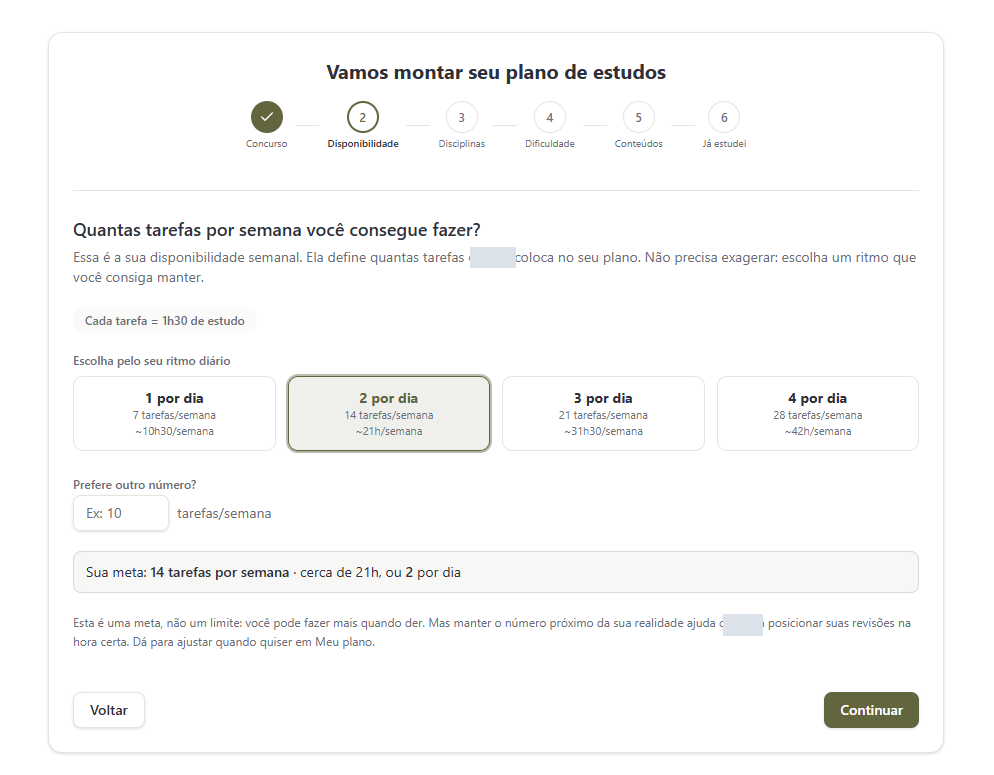

Esta imagem não abriu. Abrir a captura original.
Da disponibilidade real de tempo à próxima tarefa, com revisões integradas à rotina.
Conhecer o projetoComo projetei a ferramenta
Projetei a ferramenta para meus estudos e coordenei a implementação com agentes de IA.
- Disponibilidade, disciplinas e formatos definem o plano.
- O histórico orienta as próximas tarefas e revisões.
- Caderno de erros, simulados e discursivas complementam a rotina.